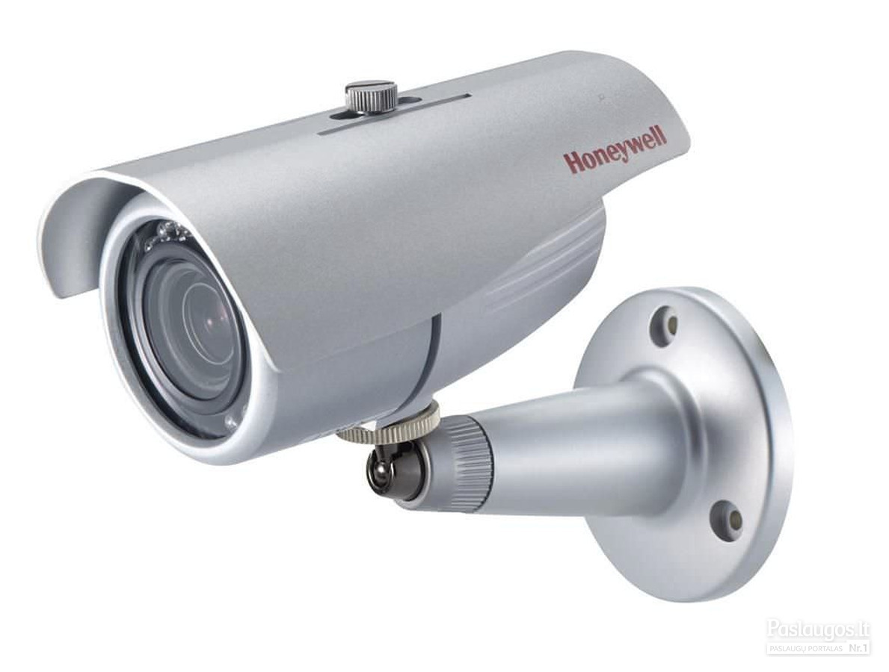

Welcome to vaizdo-kameros
IP kameros nuo 49€, Vaizdo stebėjimo kameros | Pyramid.lt
2020.10.27 11:24English По-русски Latviski Eesti keeles +370 680 44410 Susisiekime Prisijungimas Prisijungimas Palyginti prekes (0) Prekių krepšelis Krepšelis tuščias. Viso prekių už 0 € Peržiūrėti krepšelį
Dirbame 8:00- 22:00 darbo dienomis ir 10:00 - 22.00 savaitgaliais! Paskambinkite mums +370 680 44410 arba palikite pranešimą Visi kontaktai
KAMEROS IP KAMEROS WiFi kameros AHD kameros HD-CVI kameros HD-TVI kameros Analoginės kameros Slaptos kameros Medžiotojų kameros Terminės kameros ĮRAŠYMO ĮRENGINIAI IP vaizdo įrašymo įrenginiai (NVR) HD vaizdo įrašymo įrenginiai (XVR) HD-CVI vaizdo įrašymo įrenginiai (CVR) Analoginiai vaizdo įrašymo įrenginiai (DVR) WIFI KAMEROS KOMPLEKTAI APSAUGOS SISTEMOS GSM + WIFI signalizacijos komplektai GSM signalizacijos komplektai Davikliai Klaviatūros Sirenos Valdikliai DOMOFONAI PRIEDAI Stebėjimo kamerų maitinimo šaltiniai Kabeliai apsaugos kameroms Vaizdo kamerų jungtys Kietieji diskai (HDD) MicroSD kortelės Tinklo įranga Nuotolinis signalo perdavimas Nuotolinis valdymas Signalo keitikliai Kamerų laikikliai Kamerų imitacijos (muliažai) Montavimo dėžės ir spintos Atsarginio maitinimo šaltiniai (UPS) IR prožektoriai Monitoriai Instaliacinės medžiagos Viršįtampių apsauga Informaciniai lipdukai PASLAUGOS Stebėjimo sistemų montavimas Stebėjimo kamerų aptarnavimasPrekių katalogas
KAMEROS IP KAMEROS WiFi kameros AHD kameros HD-CVI kameros HD-TVI kameros Analoginės kameros Slaptos kameros Medžiotojų kameros Terminės kameros ĮRAŠYMO ĮRENGINIAI IP vaizdo įrašymo įrenginiai (NVR) HD vaizdo įrašymo įrenginiai (XVR) HD-CVI vaizdo įrašymo įrenginiai (CVR) Analoginiai vaizdo įrašymo įrenginiai (DVR) WIFI KAMEROS KOMPLEKTAI APSAUGOS SISTEMOS GSM + WIFI signalizacijos komplektai GSM signalizacijos komplektai Davikliai Klaviatūros Sirenos Valdikliai DOMOFONAI PRIEDAI Stebėjimo kamerų maitinimo šaltiniai Kabeliai apsaugos kameroms Vaizdo kamerų jungtys Kietieji diskai (HDD) MicroSD kortelės Tinklo įranga Nuotolinis signalo perdavimas Nuotolinis valdymas Signalo keitikliai Kamerų laikikliai Kamerų imitacijos (muliažai) Montavimo dėžės ir spintos Atsarginio maitinimo šaltiniai (UPS) IR prožektoriai Monitoriai Instaliacinės medžiagos Viršįtampių apsauga Informaciniai lipdukai PASLAUGOS Stebėjimo sistemų montavimas Stebėjimo kamerų aptarnavimasPrekės
KAMEROS ĮRAŠYMO ĮRENGINIAI WIFI KAMEROS KOMPLEKTAI APSAUGOS SISTEMOS DOMOFONAI PRIEDAI PASLAUGOSPagalba
Techninė pagalba Aptarnavimas Straipsniai Pirkimo sąlygos Grąžinimo sąlygos Vaizdo kamera Atsisiuntimai Stebėjimo kameros Ip kamerosYpatingi pasiūlymai
-23 % HD vaizdo stebėjimo kamera Longse LBH30HTC500FK 5MP (2592x1944px), 2,8mm Kodas: LBH30HTC500FK/28MM Naktinis matymas iki 30mMatymo kampas (horizontaliai) 103°
Maksimali raiška 5MP (2592x1944)
5 megapikselių raiška per koaksialinius kabelius!
Kaina 29 95 € su PVM 39 € Sutaupykite 9 05 € Į palyginimą Iš palyginimo Palyginti (0) -17 % Išmanioji valdoma IP kamera PYRAMID PYR-SH200XC, su WIFI, mikrofonu ir microSD jungtimi, Full HD 1080p Kodas: PYR-SH200XC Naktinis matymas iki 10mMatymo kampas (horizontaliai) 82°
Maksimali raiška 2MP 1080p (1920x1080)
Kamera puikiai tinkanti vaikų, naminių gyvūnų, auklių, slaugių ar pagyvenusių žmonių priežiūrai.
Kaina 49 95 € su PVM 59 95 € Sutaupykite 10 € Į palyginimą Iš palyginimo Palyginti (0) -12 % 2Mp WIFI IP kamerų vaizdo stebėjimo komplektas Longse 1-8 kameros Kodas: WIFI3608DE2SW200 Technologija IPSensoriaus rezoliucija 2Mpix
Naktinis matymas iki 25m
Patys pasirinkite reikiamą kamerų kiekį ir disko talpą!
Kaina 125 € - 549 € su PVM Pasirinkti -19 % AHD 4 kamerų stebėjimo komplektas Longse su aukštos rezoliucijos 5 Mpix vaizdo stebėjimo kameromis Kodas: LBH30HTC500FKSET4X Technologija AHDSensoriaus rezoliucija 5Mpix
Naktinis matymas iki 30m
Pasirinkite su disku arba be disko.
Kaina 225 € - 289 € su PVM Pasirinkti -12 % AHD 4 kamerų stebėjimo komplektas Longse su aukštos rezoliucijos 5Mpix kameromis LBH30HTC500FK Kodas: LBH30HTC500FK4SET1TBX Technologija AHDSensoriaus rezoliucija 5Mpix
Naktinis matymas iki 30m
Su 1TB kietuoju disku!
Kaina 289 € su PVM 328 € Sutaupykite 39 € Į palyginimą Iš palyginimo Palyginti (0) -13 % 4 WIFI IP kamerų Full HD vaizdo stebėjimo komplektas Longse WIFI3608DE4SW200, 1080p, 3,6mm +1TB diskas DOVANA! Kodas: WIFI3608DE4SW200 Technologija IPSensoriaus rezoliucija 2Mpix
Naktinis matymas iki 25m
Labai paprastas montavimas - įjungus į elektros tinklą įrašymo įrenginys automatiškai suranda ir prisijungia kameras.
Kaina 299 € su PVM 343 € Sutaupykite 44 € Į palyginimą Iš palyginimo Palyginti (0) -10 % 4K UHD 8 megapikselių IP kamerų komplektas Longse - 4 kameros LBH30S800 Kodas: NVR3604CDP2S800 Technologija IPSensoriaus rezoliucija 8Mpix
Naktinis matymas iki 40m
Kaina 539 € su PVM 599 € Sutaupykite 60 € Į palyginimą Iš palyginimo Palyginti (0)
Stebėjimo kameros
-23 % HD vaizdo stebėjimo kamera Longse LBH30HTC500FK 5MP (2592x1944px), 2,8mm Kodas: LBH30HTC500FK/28MM Naktinis matymas iki 30mMatymo kampas (horizontaliai) 103°
Maksimali raiška 5MP (2592x1944)
5 megapikselių raiška per koaksialinius kabelius!
Kaina 29 95 € su PVM 39 € Sutaupykite 9 05 € Į palyginimą Iš palyginimo Palyginti (0) IP kamera Longse LBH30SS500/DG, 5Mp Sony Starvis, 2,8mm, 40m IR, POE, microSD jungtis, tamsiai pilka Kodas: LBH30SS500/DG Naktinis matymas iki 40mMatymo kampas (horizontaliai) 109°
Maksimali raiška 5MP (2592x1944)
Kaina 69 € su PVM Į palyginimą Iš palyginimo Palyginti (0) IP kamera Longse LBH30SS500, 5Mp Sony Starvis, 2,8mm, 40m IR, POE, microSD jungtis Kodas: LBH30SS500 Naktinis matymas iki 40m
Matymo kampas (horizontaliai) 109°
Maksimali raiška 5MP (2592x1944)
Kaina 69 € su PVM Į palyginimą Iš palyginimo Palyginti (0) IP kamera Longse LBH30FK500W, 5 Megapikselių, WiFi, microSD jungtis, iki 40m naktinis matymas Kodas: LBH30FK500WX Naktinis matymas iki 40m
Matymo kampas (horizontaliai) 92°
Maksimali raiška 5MP (2592x1944)
Kaina 99 € - 108 95 € su PVM Pasirinkti -17 % Išmanioji valdoma IP kamera PYRAMID PYR-SH200XC, su WIFI, mikrofonu ir microSD jungtimi, Full HD 1080p Kodas: PYR-SH200XC Naktinis matymas iki 10m
Matymo kampas (horizontaliai) 82°
Maksimali raiška 2MP 1080p (1920x1080)
Kamera puikiai tinkanti vaikų, naminių gyvūnų, auklių, slaugių ar pagyvenusių žmonių priežiūrai.
Kaina 49 95 € su PVM 59 95 € Sutaupykite 10 € Į palyginimą Iš palyginimo Palyginti (0) HD vaizdo stebėjimo kamera Longse LBH30HTC500FK/DG28MM, 5MP (2592x1944px), 2,8mm, tamsiai pilka Kodas: LBH30HTC500FK/DG28MM Naktinis matymas iki 30mMatymo kampas (horizontaliai) 103°
Maksimali raiška 5MP (2592x1944)
5 megapikselių raiška per koaksialinius kabelius!
Kaina 39 € su PVM Į palyginimą Iš palyginimo Palyginti (0) HD vaizdo stebėjimo kamera Longse LIRDBAHTC500FK 5MP (2592x1944px), 3,6mm Kodas: LIRDBAHTC500FK Naktinis matymas iki 20mMatymo kampas (horizontaliai) 90°
Maksimali raiška 5MP (2592x1944)
5 megapikselių raiška per koaksialinius kabelius!
Kaina 39 € su PVM Į palyginimą Iš palyginimo Palyginti (0) Išmanioji valdoma IP kamera PYRAMID PYR-SH100XA, su WIFI ir microSD jungtimi bei mikrofonu, HD 720p Kodas: PYR-SH100XA Naktinis matymas iki 10mMatymo kampas (horizontaliai) 82°
Maksimali raiška 720p (1280x720)
Kamera puikiai tinkanti vaikų, naminių gyvūnų, auklių, slaugių ar pagyvenusių žmonių priežiūrai.
Kaina 39 95 € su PVM Į palyginimą Iš palyginimo Palyginti (0) IP kamera Longse LIRDBAHSF200, 2Mp, 2,8mm, POE Kodas: LIRDBAHSF200 Technologija IPNaktinis matymas iki 20m
Matymo kampas (horizontaliai) 109°
Maksimali raiška 2MP 1080p (1920x1080)
Kaina 49 € su PVM Į palyginimą Iš palyginimo Palyginti (0) IP kamera Longse LBH30HSF200, Full HD 1080p, 2,8mm, POE Kodas: LBH30HSF200 Technologija IP
Naktinis matymas iki 25m
Matymo kampas (horizontaliai) 109°
Maksimali raiška 2MP 1080p (1920x1080)
Kaina 49 € su PVM Į palyginimą Iš palyginimo Palyginti (0) Išmanioji valdoma IP kamera PYRAMID PYR-SH200XA, su WIFI ir microSD jungtimi bei mikrofonu, HD 1080p Kodas: PYR-SH200XA Technologija IP
Naktinis matymas iki 10m
Matymo kampas (horizontaliai) 82°
Maksimali raiška 2MP 1080p (1920x1080)
Kamera puikiai tinkanti vaikų, naminių gyvūnų, auklių, slaugių ar pagyvenusių žmonių priežiūrai.
Kaina 49 95 € su PVM Į palyginimą Iš palyginimo Palyginti (0) HD kamera judesio daviklio imitacija Longse LPRCHTC200ESL, FullHD 1080p su Sony Starvis sensoriumi Kodas: LPRCHTC200ESL Naktinis matymas iki nėraMatymo kampas (horizontaliai) 82°
Maksimali raiška 2MP 1080p (1920x1080)
Kaina 55 € su PVM Į palyginimą Iš palyginimo Palyginti (0) HD vaizdo stebėjimo kamera Longse LBP60HTC500FKP, 5MP (2592x1944px), 2,8-12mm Kodas: LBP60HTC500FKP Naktinis matymas iki 40m
Matymo kampas (horizontaliai) 109°
Maksimali raiška 5MP (2592x1944)
5 megapikselių raiška per koaksialinius kabelius!
Kaina 59 € su PVM Į palyginimą Iš palyginimo Palyginti (0) Išmanioji WIFI kamera su žmonių detekcijos funkcija PYRAMID PYR-SH200XA-AI, su WIFI ir microSD jungtimi bei mikrofonu, HD 1080p Kodas: PYR-SH200XA-AI Technologija IPNaktinis matymas iki 10m
Matymo kampas (horizontaliai) 82°
Maksimali raiška 2MP 1080p (1920x1080)
Kamera atskiria žmones nuo kitų judančių objektų ir siunčia pranešimą į telefoną! Jokių klaidingų aliarmų!
Kaina 59 95 € su PVM Į palyginimą Iš palyginimo Palyginti (0) IP kamera Longse LBH30FE500, 5Mp, 2,8mm, 40m IR, POE, microSD jungtis Kodas: LBH30FE500 Naktinis matymas iki 40mMatymo kampas (horizontaliai) 109°
Maksimali raiška 5MP (2592x1944)
Kaina 65 € su PVM Į palyginimą Iš palyginimo Palyginti (0) IP kamera Longse LBH30SP200, Full HD 1080p, Sony Starvis, 2,8mm, PoE, microSD kortelės jungtis Kodas: LBH30SP200 Naktinis matymas iki 25m
Matymo kampas (horizontaliai) 109°
Maksimali raiška 2MP 1080p (1920x1080)
Spalvotas vaizdas net nakties metu, esant minimaliam apšvietimui!
Kaina 65 € su PVM Į palyginimą Iš palyginimo Palyginti (0) HD vaizdo stebėjimo kamera Longse BMSAHTC500FKPW, 5MP, 3,6mm, baltos šviesos LED iki 20m Kodas: BMSAHTC500FKPW Naktinis matymas iki 20mMatymo kampas (horizontaliai) 90°
Maksimali raiška 5MP (2592x1944)
Spalvotas vaizdas ir dieną ir naktį!
Kaina 69 € su PVM Į palyginimą Iš palyginimo Palyginti (0) IP kamera Longse LIRDBASS500A, 5Mp, 2,8mm, POE, microSD, integruotas mikrofonas Kodas: LIRDBASS500A Naktinis matymas iki 20mMatymo kampas (horizontaliai) 109°
Maksimali raiška 5MP (2592x1944)
Kaina 79 € su PVM Į palyginimą Iš palyginimo Palyginti (0) IP kamera Longse LIRDBASS500/DGA, tamsiai pilka, 5Mp, 2,8mm, POE, microSD, integruotas mikrofonas Kodas: LIRDBASS500/DGA Naktinis matymas iki 20m
Matymo kampas (horizontaliai) 109°
Maksimali raiška 5MP (2592x1944)
Kaina 79 € su PVM Į palyginimą Iš palyginimo Palyginti (0) Belaidė IP kamera PYRAMID PYR-DK1M, su akumuliatoriumi, WIFI ir microSD kortelės jungtimi. Skirta patalpoms. HD 720p Kodas: PYR-DK1M Naktinis matymas iki 10m
Matymo kampas (horizontaliai) 109°
Maksimali raiška 720p (1280x720)
100% belaidė kamera . Iki 90 dienų baterijos veikimas.
Kaina 79 95 € su PVM Į palyginimą Iš palyginimo Palyginti (0) 1 - 20 iš 44 Visos prekėsTik patikimų gamintojų vaizdo stebėjimo kameros už gerą kainą
-Kameros namams, stebėti augintiniams, vaikams ar pagyvenusiems žmonėms.
-Lauko kameros namui ar sodybai
-Kameros parduotuvems, biurams, kavinėms, gamybinėms patalpoms stebėti, darbuotojų kontrolei ir turto saugumui užtikrinti.
-Kameros transporto stebėjimui ir kontrolei.
-Medžioklinės kameros ir kameros su baterijomis.
-Kameros daugiabučiams namams, mokykloms, visuomeniniams pastatams.
-Senų vaizdo stebėjimo sistemų atnaujinimas.
-Slaptos kameros
Nuo paprasčiausių kamerų namams iki profesionalių aukštos raiškos kamerų su specifinėmis sąvybėmis.
Patyrusi Pyramid komanda jums siūlo
Apsaugos kamerų sistemos ir jos pajungimo projektavimą ir konsultacijas.
Nemokamą pagalbą pirmą kartą susikonfiguruojant sistemą, kai klientas diegia sistemą pats.
Galimybę išsikviesti specialistą konsultacijai į objektą
Esant poreikiui, siūlome įrangos montavimo paslaugas visoje Lietuvoje.
Ilgą garantijos terminą ir greitą garantinį remontą.
Prekių pristatymą į bet kurią Lietuvos vietą.
Įvairios vaizdo stebėjimo sistemos
Kadangi daugumą vaizdo stebėjimo stebėjimo sistemų nėra sunku pasijungti net ir visai nepatyrusiems vartotojams, konsultuojame ir padedame išsirinkti tinkamiausią variantą.
Beveik visos šiuolaikinės kameros turi naktinio matymo funkciją, kurią suteikia įmontuoti infraraudonųjų spindulių LED. Visų mūsų stebėjimo sistemų vaizdą galima stebėti internetu naudojantis kompiuteriu, planšetiniu kompiuteriu išmaniuoju telefonu be jokių papildomų mėnesinių mokesčių. Longse gamintojo įrangai stebėti suteikiame nemokamą programą kompiuteriui lietuvių kalba, taip pat lietuvišką telefono programėlę.
Šiuo metu populiariausios IP kameros, kurias rekomenduojame visiems objektams. Aukštas detalumas ir platus funkcionalumas leidžia lengvai ir greitai jas diegti nuo vienos ar kelių kamerų iki kelių šimtų kamerų sistemose. Šiais laikais tai nėra prabangos prekė, IP kameros prieinamos ir namų vartotojams.
Vis labiau populiarėja WIFI kameros, kurias galima montuoti ten, kur nėra galimybės pravesti kabelius. Belaidės kameros gana reiklios, tai vistik nebloga alternatyva padedanti apsaugoti jau įrengtus namus be didelių išlaidų.
Taupantiems ar turintiems senas analogines kameras rekomenduojame atsinaujinti sistemas HD kameromis, kurių raiškos yra tokios pačios, o vaizdo kokybe beveik nenusileidžia IP kameros, o jos veikia per koaksialinius (televizinius) kabelius. Taigi nėra poreikio keisti senus kabelius naujais. Tokių sistemų kaina yra netgi palankesnė dėl jų paprastesnės konstrukcijos.
Kreipkitės - padėsime!
Patarimai dėl duomenų apsaugos vykdant vaizdo stebėjimą Longse kameros parodoje Resta 2019 PERKU 10 - atsiskaitymas per 10 mėnesių be pabrangimo! Longse kameros parodoje SuperNamai 2018 Vaizdo perdavimo technologijos Kodavimas H.264/H.265/H.265+/MJPEG Kamerų maitinimas 12V, POE PYRAMID pristato LONGSE kameras parodoje RESTA 2018 Belaidės WI-FI kameros Prisijungimas prie Longse stebėjimo kamerų kompiuteriu ar telefonu Prisijungimo nuotoliniu būdu technologijos Objektyvai ir jų matymo kampas IR apšvietimas - naktinis matymas Įsirengti vaizdo stebėjimo sistemą patiems labai paprasta! Vaizdo stebėjimo kamerų rezoliucijos (raiškos) Kiekvienas gali pasijungti vaizdo stebėjimo sistemą pats! Informacija Tinklalapio taisyklės Grąžinimo sąlygos Privatumo politika Aktualijos Populiariausios prekės Akcijos Naujos prekės Apie Pyramid Kontaktai Didmeninė prekyba Mokėjimai Pristatymas Parduotuvė Pyramid.lt UAB Enzas. Kodas: 303005607. PVM mokėtojo kodas: LT100009310917. Ozo g. 25, LT-07150, Vilnius. Telefonas: +370 680 44410. Sąskaitos nr.: LT507300010134546013, AB Swedbank. Banko kodas: 73000, SWIFT: HABALT22. © 2020 UAB Enzas. Be UAB Enzas sutikimo draudžiama kopijuoti ir platinti svetainėje esančią informaciją. El. parduotuvių nuoma: verskis.lt